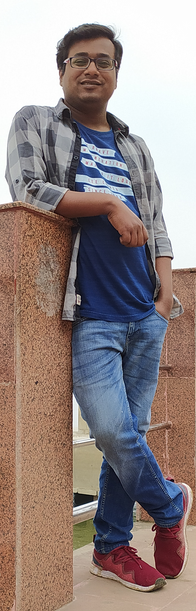

Hi. My name is Pankaj. I am an atmospheric scientist and a machine learning enthusiast, currently pursuing PhD at the Indian Institute of Technology Kharagpur under Jayanarayanan Kuttippurath in ATMOS group. My main research interests lie at the intersection of Bayesian statistics, machine learning and physical models. Being an atmospheric scientist, I study weather/climate and chemistry interactions using Bayesian statistics and explainable machine learning, and develop open source tools for atmospheric modeling and analysis.
I graduated from the Indian Institute of Technology Kharagpur with a masters degree in Earth System Science and Technology in 2017, where I worked on the problem of stratospheric ozone hole in Antarctica. Before moving to the fields of Atmospheric Chemistry and Physics, I had a brief gig at a metal fabrication and processing company. I have a BE degree in Mechanical Engineering with distinction from Birla Institute of Technology.
If you want to get in touch with me, you can contact me by various channels with links provided at the bottom . I’ll be happy to connect with other people with similar interests.
Open source projects
-
markdown-scholar: A python tool to convert a table from pandas to latex or markdown formats.
-
Autoencoder based clustering using self organising maps (AuSOM): It is a python library to perform SOM based clustering of trajectories using sequence-to-sequence autoencer. It is still under development and will be open shortly.
-
HyTraj: It is a python library, still under development, for performing receptor modeling using trajectories generated with HYSPLIT model. It'll have functions for generating large number of air parcel trajectories with parallel processing; reducing the trajectories generation time. It will also have appropriate tools for clustering trajectories using different clustering techniques.
-
CausalDiscovery: A python library for performing causal network analysis using Transformer based architecture. It is still under development.
Papers
-
J. Kuttippurath, P. Kumar, P. J. Nair, P C Pandey: Emergence of ozone recovery evidenced by reduction in the occurrence of Antarctic ozone loss saturation, npj Climate and Atmospheric Science, 2018.
-
J. Kuttippurath, P. Kumar, P. J. Nair, A. Chakraborty: Accuracy of satellite total column ozone measurements in polar vortex conditions: Comparison with ground-based observations in 1979--2013, Remote Sensing of Environment, 2018.
Conferences
-
Pankaj Kumar and Jayanarayanan Kuttippurath: Tropical teleconnection and climate impacts of tropospheric ozone variability in Antarctica, National Conference on Polar Sciences, Goa, August 2019.
-
Jayanarayanan Kuttippurath and Pankaj Kumar: Polar Ozone and Climate Change, National Conference on Polar Sciences, Goa, August 2019.
-
Pankaj Kumar, Jayanarayanan Kuttippurath, Prijitha J. Nair, and Arun Chakroborty: Accuracy of Ground-based measurements in Polar Vortex conditions: Comparison to TOMS/OMI observations during 1979-2013, EGU General Assembly, Vienna, April 2017.
-
Rohit Kumar Shukla, Chithra Shaji, Satya P Ojha, and Pankaj Kumar: A study on the seasonal variability of upwelling and its effects on physical parameters in Arabian Sea, EGU General Assembly, Vienna, April 2017.